Refraction of Light
When a ray of light traveling through a transparent medium encounters a boundary leading into another transparent medium, as in Figure 22.6a, part of the ray is reflected and part enters the second medium. The ray that enters the second medium is bent at the boundary and is said to be refracted. The incident ray, the reflected ray, the refracted ray, and the normal at the point of incidence all lie in the same plane. The angle of refraction, θ2, in Figure 22.6a depends on the properties of the two media and on the angle of incidence, through the relationship
where v1 is the speed of light in medium 1 and v2 is the speed of light in medium 2. Note that the angle of refraction is also measured with respect to the normal. In Section 22.7, we derive the laws of reflection and refraction using Huygens’ principle. Experiment shows that the path of a light ray through a refracting surface is reversible. For example, the ray in Figure 22.6a (page 728) travels from point A to point B. If the ray originated at B, it would follow the same path to reach point A, but the reflected ray would be in the glass.
When light moves from a material in which its speed is high to a material in which its speed is lower, the angle of refraction v2 is less than the angle of incidence. The refracted ray therefore bends toward the normal, as shown in Figure 22.7a. If the ray moves from a material in which it travels slowly to a material in which it travels more rapidly, v2 is greater than v1, so the ray bends away from the normal, as shown in Figure 22.7b.
the Law of refraction
When light passes from one transparent medium to another, it’s refracted because the speed of light is different in the two media. 1 The index of refraction, n, of a medium is defined as the ratio c/v:
n := speed of light in vacuum/speed of light in a medium = c/v
From this definition, we see that the index of refraction is a dimensionless number that is greater than or equal to 1 because v is always less than c. Further, n is equal to one for vacuum. Table 22.1 lists the indices of refraction for various substances.
| Substance | Index of Refraction | Substance | Index of Refraction |
|---|---|---|---|
| Solids at 20°C | Liquids at 20°C | ||
| Diamond (C) | 2.419 | Benzene | 1.501 |
| Fluorite (CaF2) | 1.434 | Carbon disulfide | 1.628 |
| Fused quartz (SiO2) | 1.458 | Carbon tetrachloride | 1.461 |
| Glass, crown | 1.52 | Ethyl alcohol | 1.361 |
| Glass, flint | 1.66 | Glycerine | 1.473 |
| Ice (H2O) (at 0°C) | 1.309 | Water | 1.333 |
| Polystyrene | 1.49 | Gases at 0°C, 1 atm | |
| Sodium chloride (NaCl) | 1.544 | Air | 1.000 293 |
| Zircon | 1.923 | Carbon dioxide | 1.000 45 |
If n2 is equal to n1, then θ2 is equal to θ1 and refraction does not bend the light beam, which continues in the undefiected direction;
If n2 is greater than n1, then θ2 is less than θ1 In this case, refraction bends the light beam away from the undefiected direction and toward the normal, as in Fig. 1.a
If n2 is less than n1, then θ2 is greater than θ1 In this case, refraction bends the light beam away from the undefiected direction and away from the normal, as in Fig. 1 b.
Refraction cannot bend a beam so much that the refracted ray is on the same side of the normal as the incident ray.
The bending of Light
The wave only refracts if it enters the medium at an angle. Follow a single wavecrest; if the wave is entering the medium at an angle, then part of the wavecrest enters the medium first, and starts to slow down, while the other part of the wavecrest is still going fast, and therefore the wavecrest must bend. If the wave enters at a right angle 90°, then the entire wavecrest is slowed down simultaneously and no refraction occurs.

Chromatic dispersion
The index of refraction n encountered by light in any medium except vacuum depends on the wavelength of the light. The dependence of n on wavelength implies that when a light beam consists of rays of different wavelengths, the rays will be refracted at different angles by a surface; that is, the light will be spread out by the refraction. This spreading of light is called chromatic dispersion, in which "chromatic" refers to the colors associated with the individual wavelengths and "dispersion" refers to the spreading of the light according to its wavelengths or colors. The refractions of Figs. 33-16 and 33-17 do not show chromatic dispersian because the beams are monochromatic (of a single wavelength or color).
Generally, the index of refraction of a given medium is greater for a shorter wavelength (corresponding to, say, blue light) than for a longer wavelength (say, red light).
As an example, Fig. 33-18 shows how the index of refraction of fused quartz depends on the wavelength of light. Such dependence means that when a beam made up of waves of both blue and red light is refracted through a surface, such as from air into quartz or vice versa, the blue component (the ray corresponding to the wave of blue light) bends more than the red component.
A beam of white light consists of components of all (or nearly all) the colors in the visible spectrum with approximately uniform intensities. When you see such a beam, you perceive white rather than the individual colors. In Fig. 33-19a, a beam of white light in air is incident on a glass surface. (Because the pages of this book are white, a beam of white light is represented with a gray ray here. Also, a beam of monochromatic light is generally represented with a red ray.) Of the refracted light in Fig. 33-19a, only the red and blue components are shown. Because the blue component is bent more than the red component, the angle of refraction θ2b for the blue component is smaller than the angle of refraction θ2r for the red component. (Remember, angles are measured relative to the normal.) In Fig. 33-19b, a ray of white light in glass is incident on a glass-air interface. Again, the blue component is bent more than the red component, but now θ2b is greater than θ2r
To increase the color separation, we can use a solid glass prism with a triangular cross section, as in Fig. 33-20a. The dispersion at the first surface (on the left in Figs. 33-20a, b) is then enhanced by the dispersion at the second surface.